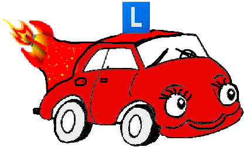

 Welkom Bij Autorijschool Rocket!
Als je opzoek bent naar een rijschool hoef je niet meer verder te zoeken dit is de rijschool die je gaat helpen aan die rijbewijs waar naar je gedroomd hebt die ervaring van dat je eindelijk zelf naar je sport kan rijden zonder dat je last hebt van je vader naast je die je steeds stimuleerd goed te presteren. Kom bij Rijschool Rocket de rijschool speciaal voor jou!
Met vriendelijke groet,
Ad Rakkett
Er komt veel kijken bij het opstarten van een nieuwe rijschool
Welkom op de website van de autorijschool van Ad Rakett. Wij zijn nu een kleine sinds 2001 in deze business als een eigen firma(BV). Ik Ad rakett werkte de laatste jaren als instuctuur onder een andere firma en wilde graag een eigen op starten en dit is er van gekomen een eigen rijschoolrocket genaamd Rijschool Rocket. Mijn vrouw en ik zijn samen de instructuren van ons geliefde bedrijf.
Opleiding
Tijdens mijn opleiding had ik al meteen nagedacht over het idee om direct voor zichzelf te starten. Maar ging toch maar eerst voor een ander bedrijf werken en uiteindelijk Na het behalen van de benodigde diploma's en tijdens mijn stageperiode heb ik dan daadwerkelijk de beslissing genomen.
Natuurlijk moest er toen nog heel veel geregeld worden, zoals een bedrijfsnaam. Ik wilde het liefst een pakkende naam, zegt de kersverse rijschoolhouder. Na eerst veel namen bedacht te hebben die al door anderen vastgelegd waren, is dat volgens mij redelijk gelukt: Rocket. Vervolgens de inschrijving bij de KvK (Kamer van Koophandel). Daarna moest ik bezig gaan met de aanschaf van de auto en de bestickering daarvan.
Bestickering
Ik wilde dat de bestickering meteen een echte eye-catcher zou worden, dat in het logo zijn en dat de website er strak en overzichtelijk moest uitzien. Dit zijn natuurlijk wel de belangrijke dingen die op moeten vallen bij potentiële leerlingen , aangezien niemand Rijschool Rocket nog kende.
Hiervoor moet ik het nodige investeren wat je op den lange duur er uiteindelijk uit zult halen. Naamsbekendheid, daar draait het allemaal om. Vervolgens op zoek naar de juiste personen of bedrijven waar je dit kan laten doen.
Leerlingen werven
Vervolgens moesten er leerlingen geworven worden. Ik koos ervoor om flyers te laten ontwerpen en bedrukken. Vervolgens heb ik deze in Utrecht laten bezorgen. Ook heb ik in de plaatselijke krant een gratis interview laten plaatsen over de start van Rijschool Rocket. Daar kreeg eigenlijk meteen een hoop aanmeldingen op binnen.
Ook de eerste echte rijles die ik zelf gaf, was erg spannend. Hoe ga ik dat nu precies aanpakken met zo'n leerling de eerste keer? Ik koos ervoor de leerling na een proefles een lesovereenkomst te laten tekenen met duidelijke afspraken erin voor beide kanten. Maar ook dat moet je dan natuurlijk nog van tevoren opstellen en erover nadenken wat je er precies in wilt zetten. De eerste rijles liep ook nog behoorlijk uit, maar ondertussen ben ik er gelukkig behoorlijk in bedreven.
Volle agenda
Na een aantal maanden begon de agenda van Rijschool Rocket steeds voller te raken. Na vier maanden had ik eigenlijk al niet echt ruimte meer om zelfs nog nieuwe leerlingen aan te nemen. Dit is natuurlijk helemaal super, maar betekent ook een heleboel administratie tijdens de uren dat je dan vrij bent heb ik gemerkt.
Na zelf al veel boekhoudkundige ervaring in mijn vorige beroep te hebben opgedaan had ik op een gegeven moment een aantal Excel sheets opgesteld waarbij ik mijn uren, leerlingen, gesloten lesovereenkomsten en ontvangen betalingen in bij hield. Je probeert alles zo goed mogelijk bij te houden, maar het is moeilijk een totaal overzicht te houden.
Administratie
Ik ben op zoek gegaan naar manieren om de administratie te optimaliseren en de tijden die ze er mee bezig was te verkorten. Tijdens mijn opleiding heb ik de naam Dation al eens een keer horen vallen en hier ben ik op internet naar op zoek gegaan. Na telefonisch contact te hebben gehad met Dation kreeg ik direct een proefperiode van 1 maand aangeboden zodat ik eens op mijn gemak kon gaan bekijken of dit wat voor mij zou zijn.
Na een dag proberen zag ik al direct dat het veel meer is dan alleen een online agenda. Na 2 dagen was ik helemaal up-and-running! Het zit allemaal zo slim in elkaar. Het enige wat ik eigenlijk hoef te doen is mijn nieuwe leerlingen in te voeren in het systeem en de agenda online bij te houden. Het systeem doet de rest.
Betalingen
Ik kan snel en overzichtelijk zien wat er nog open staat per leerling wat betreft saldo en uren en daarnaast biedt het systeem mij de mogelijkheid om bijvoorbeeld kas- en bankbetalingen bij te houden. Dat scheelt me een hoop arbeidsuren.
Alle Excel sheets waar ik eerder mee werkte gebruik ik nu helemaal niet meer. Ik kan nu zelfs vanuit de auto met mijn smartphone of iPad administratieve zaken bijhouden. Ook erg handig als je even een uurtje hebt wat niet doorgaat, maar je toch nog nuttig wilt kunnen invullen.”
Rijschool
Ik weet nog niet precies hoe mijn rijschool zich verder gaat ontwikkelen. Er zijn nog heel wat beslissingen te maken. En het was – en is – af en toe hard werken, maar ik ben erg trots dat ik mijn rijschool op heb kunnen zetten en nu een volle agenda heb.